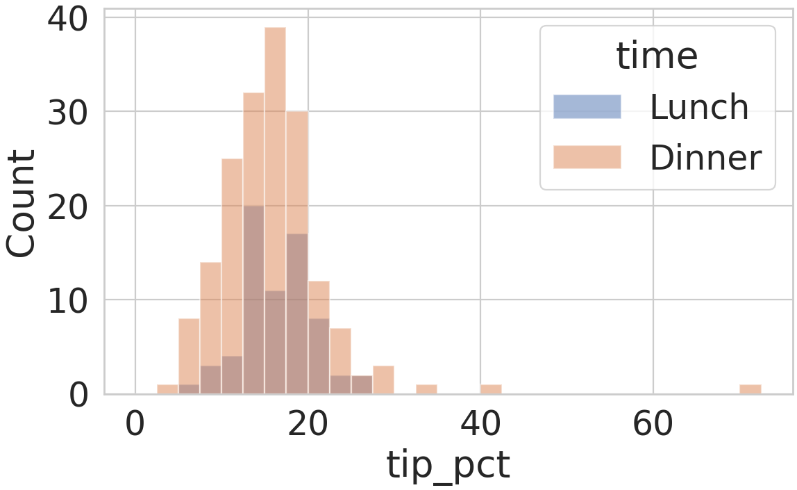
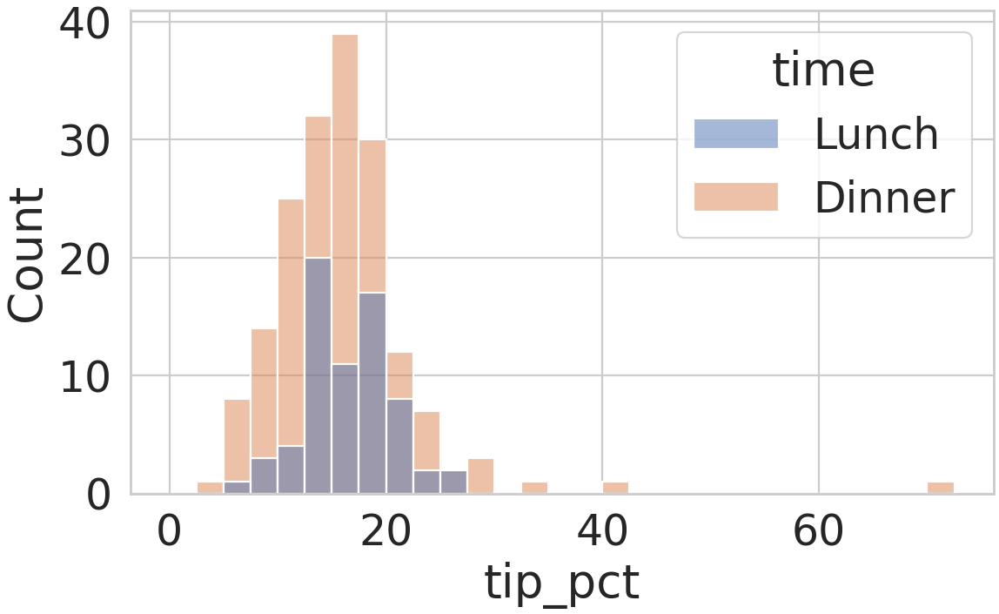
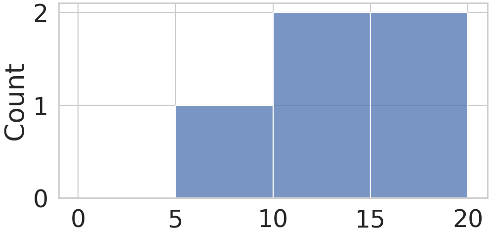
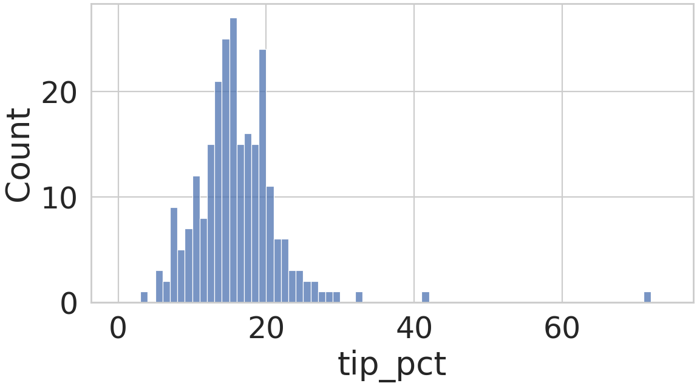
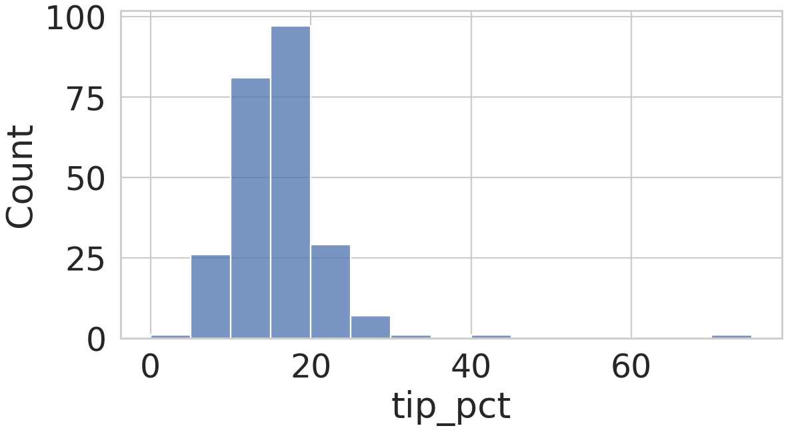
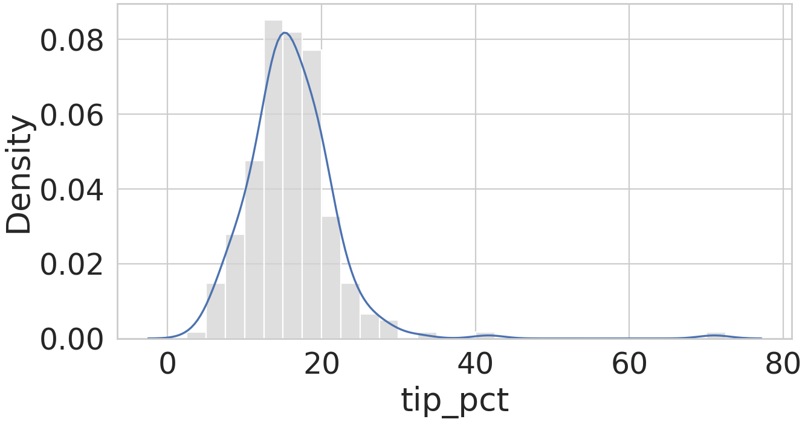
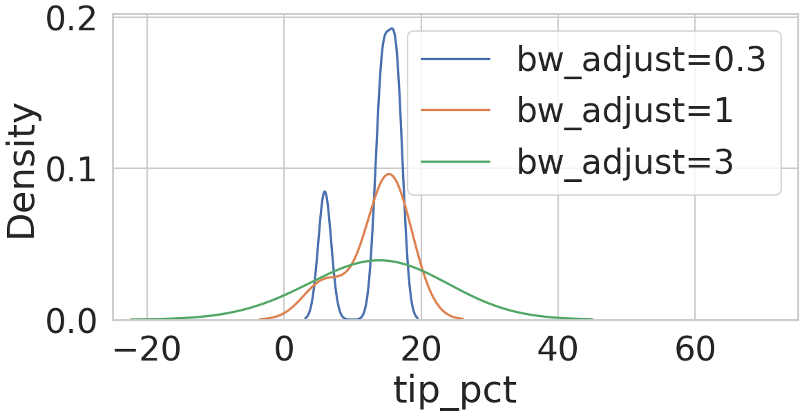
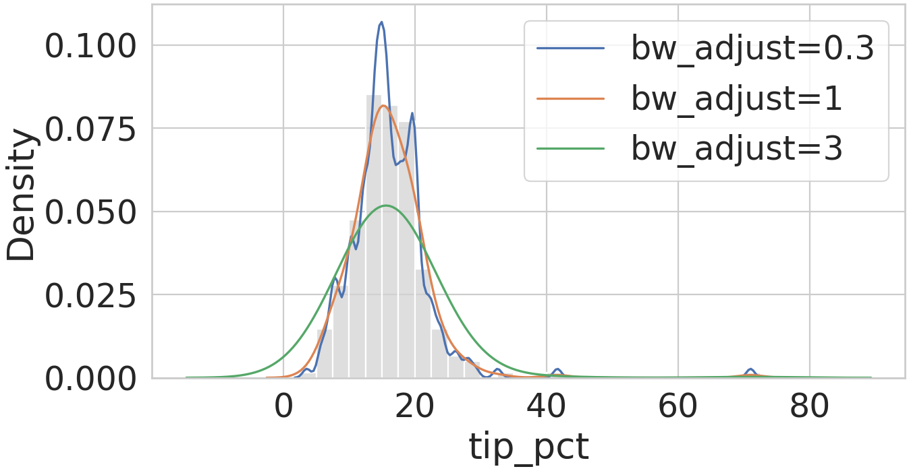
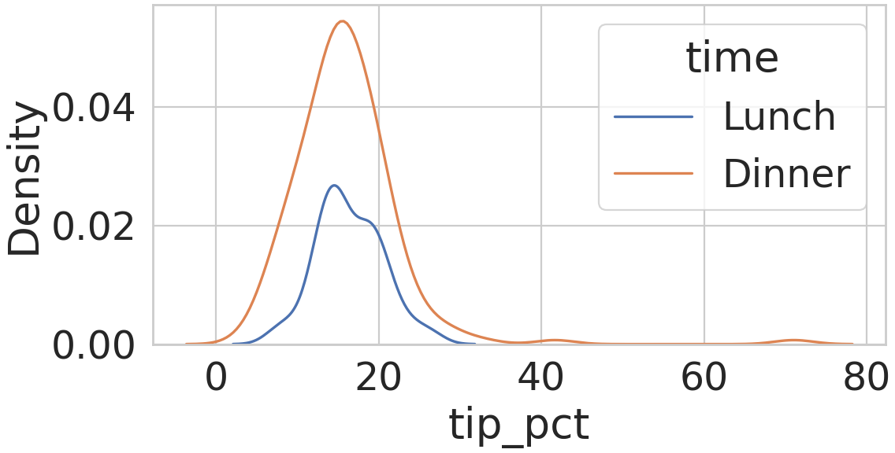
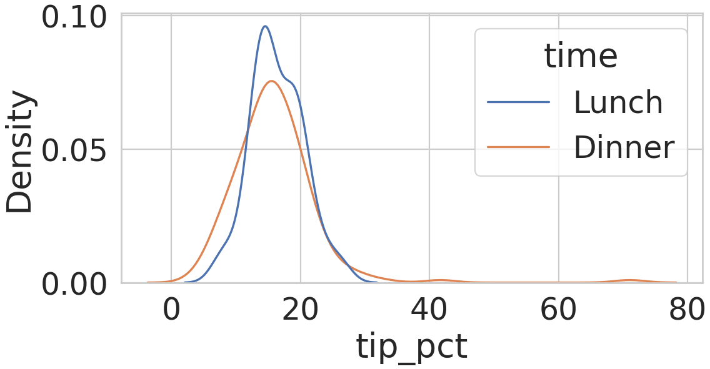

| 이미 아는 내용 | 새로 해결할 문제 | 학습 순서 |
|---|---|---|
| DataFrame 열 선택·불리언 마스크, Matplotlib hist·legend | 그룹마다 반복되는 행 추출·라벨 코드 | 입력 방식: Seaborn(DataFrame 열 이름으로 통계 그림을 그리는 라이브러리)·테마(스타일시트처럼 기본 모양을 정하는 rcParams 묶음) → 열 이름 입력과 hue 자동 그룹 분할 |
| 히스토그램의 개수·확률밀도, 구간 경계 | 구간 폭에 따라 달라지는 분포 모양 | 히스토그램: 작은 입력의 구간별 개수 → 구간 폭 1·5 비교 |
| 확률밀도 히스토그램의 면적 합 1 | 구간 경계 없이 그리는 분포 곡선 | KDE(관측마다 종 모양 곡선을 놓아 평균한 분포 곡선)·대역폭(종 모양 곡선의 폭): 확률밀도 히스토그램과 비교 → 대역폭 배수 작은 입력 → 전체 244개 |
| 불리언 마스크로 나눈 그룹별 행 수 | 건수가 다른 그룹의 모양 비교 | 그룹 정규화(그룹 곡선의 면적 기준): 기본 면적 합 1 → 곡선마다 면적 1 |
Outline
- 식당 계산 244건의 팁 표: 관리자에게 전달할 팁 비율 분포 그림 세트 작성
- 관리자의 두 질문: 팁 비율의 보통 값·퍼짐, 시간대별 분포 모양
완성 기준: 두 질문마다 고른 분포 그림의 모양이 구간 폭·대역폭·정규화 기준 중 무엇에 따라 달라지는지 같은 팁 표의 실제 실행 결과로 설명 가능
팁 표의 행·열 구조와 탐색 질문
- 입력: Seaborn 예제 저장소의 tips 표(이후 팁 표), 한 행 = 식당 계산 1건(244행)
- 질문 1 팁 비율의 보통 값·퍼짐 · 질문 2 시간대별 분포 모양
코드 위치: 한 Python 파일(또는 노트북)에 이 장부터 장표 순서대로 이어 실행, 뒤 장 코드는 앞 장의 변수 재사용
import numpy as np
import matplotlib.pyplot as plt
import seaborn as sns
sns.set_theme(style='whitegrid', font_scale=2)
tips = sns.load_dataset('tips')
tips['tip_pct'] = 100 * tips['tip'] / tips['total_bill']
print(tips.shape)
print(tips.head(2).round(2))(244, 8) total_bill tip sex smoker day time size tip_pct 0 16.99 1.01 Female No Sun Dinner 2 5.94 1 10.34 1.66 Male No Sun Dinner 3 16.05
set_theme(...): 이후 그림에 흰 배경·회색 눈금선·2배 글자 테마 적용load_dataset('tips'): 예제 CSV를 DataFrame으로 내려받음(인터넷 필요)head(2).round(2): 앞 2행의 반올림 표시(tips값 유지)
| 열 | 뜻 | 유형 |
|---|---|---|
total_bill · tip | 계산 총액 · 팁(달러) | 수치형 |
tip_pct | 팁 비율(%), 새로 만든 파생 열 | 수치형 |
time | 시간대(Lunch·Dinner) | 범주형 |
smoker | 일행 중 흡연자 여부(Yes·No) | 미사용 |
sex · day · size | 성별 · 요일 · 일행 인원 | 미사용 |
- Seaborn(코드의
sns): DataFrame 열 이름으로 통계 그림을 그리는 Matplotlib 기반 라이브러리,import seaborn as sns로 불러옴 - 수치형 변수: 크기 비교·평균 계산이 의미 있는 값
- 범주형 변수: 정해진 이름 몇 개 중 하나인 값(팁 표: 값 목록을 함께 저장하는 pandas category 자료형)
- 검산: 0번 행
tip_pct= 100 × 1.01 ÷ 16.99 = 5.94
- 질문 1 = 수치형 1개의 분포
- 질문 2 = 범주형 1개로 나눈 그룹별 분포
Matplotlib으로 겹쳐 그린 시간대별 팁 비율 히스토그램
- 그룹 비교 단계: Lunch·Dinner 두 시간대의 팁 비율 분포를 한 Axes에 겹쳐 비교
- Matplotlib 방식: 그룹마다 행 추출 →
hist호출 → 범례 이름 지정을 반복
edges = np.arange(0, 75, 2.5)
fig, ax = plt.subplots(figsize=(8, 4.5))
for t in ['Lunch', 'Dinner']:
part = tips.loc[tips['time'] == t, 'tip_pct']
counts, _, _ = ax.hist(part, bins=edges,
alpha=0.5, label=t)
print(t, counts.sum())
ax.set(xlabel='tip_pct', ylabel='Count')
ax.legend(title='time')Lunch 68.0 Dinner 176.0
edges: 0, 2.5, …, 72.5의 경계 30개 → 폭 2.5인 구간 29개, 최댓값 71.03% 포함part: 불리언 마스크tips['time'] == t로 고른 행의 팁 비율counts, _, _ = ax.hist(...): 반환값(구간별 개수, 경계, 막대) 중 개수만counts에 저장, 쓰지 않는 두 값은_자리로 버림
alpha=0.5 반투명)은 대부분 주황 막대와 겹쳐 섞인 갈색 영역
- 결과: 같은 구간 29개에서 두 시간대 분포 비교 가능
- 남은 문제: 그룹 값 목록·행 추출·축 이름·범례 제목을 모두 코드에 직접 작성
열 이름 입력과 hue에 따른 자동 그룹 분할
sns.histplot: 표의 열 하나를 히스토그램으로 그리는 Seaborn 함수,data= 표,x·hue= 열 이름(표의 열 제목 문자열)- 열 이름 입력: 값 대신 표와 열 제목을 넘김 → Seaborn이 그 열 값을 꺼내 쓰고 축 이름·범례도 표기
이어 실행 코드: edges = 앞 장 np.arange(0, 75, 2.5)의 경계 30개(폭 2.5 구간 29개)
fig, ax = plt.subplots(figsize=(8, 4.5))
sns.histplot(data=tips, x='tip_pct', hue='time',
bins=edges, ax=ax)
heights = [p.get_height() for p in ax.patches]
print(len(heights), sum(heights))58 244
hue='time': 색으로 나눌 범주형 열, 범주 값별 행 분할·색 배정 담당ax.patches:ax에 그려진 Matplotlib 막대 목록,get_height()= 막대 하나의 높이heights: 막대 58개 = 구간 29개 × 시간대 2개, 합 244 = 68 + 176
time·Lunch(파랑)·Dinner(주황), 축 이름 tip_pct·Count: 열 이름·값으로 자동 표기
- 핵심: 앞 장의 값 목록·마스크·
label·legend·축 이름 코드 →hue='time'하나로 대신, 결과(구간 29개, 막대 58개, 합 244 = 68 + 176) 동일 - Seaborn = Matplotlib의 대체가 아니라 Matplotlib
ax위에 Matplotlib 막대를 그려 주는 도구(근거:ax.patches) · 비용:seaborn별도 설치 - 사용 시점: DataFrame의 범주형 열로 그룹을 나눠 통계 그림을 그릴 때
작은 입력의 구간 경계와 구간별 개수
- 단계 전환: 앞 단계 = 같은 그림을 만드는 입력 방식 비교(244건, 시간대 그룹) → 이 단계부터 = 질문 1(팁 비율의 보통 값·퍼짐)을 위한 히스토그램 구간 설정
- 이 장의 확인: 경계 배열
bins→ 구간별 개수의 원리, 작은 입력x5= 팁 표 앞 5행의 팁 비율 5개, 경계 0·5·10·15·20 → 폭 5 구간 4개
x5 = np.array(tips['tip_pct'].head(5))
fig, ax = plt.subplots(figsize=(7, 3.2))
sns.histplot(x=x5, bins=np.arange(0, 25, 5), ax=ax)
heights = [p.get_height() for p in ax.patches]
print(x5.round(2))
print(len(heights), sum(heights), np.array(heights))[ 5.94 16.05 16.66 13.98 14.68] 4 5 [0 1 2 2]
np.arange(0, 25, 5): 끝값 25 제외 → 경계 0, 5, 10, 15, 20x=x5: 열 이름 대신 배열을 직접 전달- 출력 2행: 막대 4개, 높이 합 5 = 관측 수, 구간별 높이 0·1·2·2
| 구간(%) | 들어간 x5 값 | 개수 |
|---|---|---|
| 0~5 | 없음 | 0 |
| 5~10 | 5.94 | 1 |
| 10~15 | 13.98 · 14.68 | 2 |
| 15~20 | 16.05 · 16.66 | 2 |
x5 값의 개수
- 경계 5개 → 구간 4개, 개수 합 0 + 1 + 2 + 2 = 5 = 관측 수
- 다음 단계: 같은 경계 → 개수 원리를 전체 244개에 적용해 보통 값·퍼짐 확인
전체 팁 비율의 폭 1 구간 히스토그램
- 질문 1 단계: 팁 비율 244개의 보통 값과 퍼짐 확인
- 구간 폭: 막대 하나가 덮는 값의 폭, 경계 배열
bins로 0%부터 1 간격 지정
fig, ax = plt.subplots(figsize=(8, 4))
sns.histplot(data=tips, x='tip_pct',
bins=np.arange(0, 75, 1), ax=ax)
heights = [p.get_height() for p in ax.patches]
print(len(heights), max(heights), sum(heights))74 27 244
np.arange(0, 75, 1): 끝값 75 제외 → 마지막 경계 74, 팁 비율 최댓값 71.03% 포함- 출력: 구간 74개, 가장 높은 막대 27건, 높이 합 244 = 전체 행

- 폭 1: 작은 구간마다 몇 건씩만 들어가 들쭉날쭉한 모양
- 남은 질문: 폭을 넓히면 모양이 어떻게 달라지는지
히스토그램 구간 폭에 따른 분포 모양
- 같은 244개를 경계 배열
bins로 0%부터 5 간격으로 다시 나눔 - 비교: 앞 장의 폭 1 그림과 나란히 봉우리 개수·들쭉날쭉함 확인
binwidth=5지정 시: 최솟값 3.56%~최댓값 71.03%를 13등분한 폭 5.19 구간(Seaborn 0.13.2) → 경계 배열로 폭 고정
fig, ax = plt.subplots(figsize=(8, 4))
sns.histplot(data=tips, x='tip_pct',
bins=np.arange(0, 80, 5), ax=ax)
heights = [p.get_height() for p in ax.patches]
print(len(heights), max(heights), sum(heights))15 97 244

np.arange(0, 80, 5): 끝값 80 제외 → 마지막 경계 75, 팁 비율 최댓값 71.03% 포함(높이 합 244)
- 같은 244개라도 구간 폭에 따라 봉우리 개수·들쭉날쭉함이 달라 보임 → 구간 폭을 그림과 함께 표기
같은 팁 비율의 확률밀도 히스토그램과 KDE 곡선
- 커널 밀도 추정(kernel density estimation, 이후 KDE): 관측마다 종 모양 곡선(커널: 관측을 중심으로 좌우 대칭인 정규분포 모양, 폭 = 대역폭)을 놓아 평균한 확률밀도 곡선
- 비교 질문: 같은 팁 비율 244개를 구간 막대와 경계 없는 곡선으로 그렸을 때의 모양 차이
이어 실행 코드: edges = 0~72.5%의 폭 2.5 경계 30개(구간 29개)
fig, ax = plt.subplots(figsize=(9, 4.5))
sns.histplot(data=tips, x='tip_pct', bins=edges,
stat='density', color='lightgray', ax=ax)
sns.kdeplot(data=tips, x='tip_pct', ax=ax)
heights = [p.get_height() for p in ax.patches]
print(len(heights), round(max(heights), 4),
round(sum(heights) * 2.5, 2))29 0.0852 1.0
sns.kdeplot: 열 이름 입력으로 KDE 곡선을 그리는 Seaborn 함수, 대역폭은 Seaborn이 관측 값으로 자동 결정stat='density': 막대 높이 = 개수 ÷ (전체 수 × 구간 폭), 막대 면적 합 1(이전 강의의 확률밀도 히스토그램)- 출력: 막대 29개, 최고 0.0852 = 12.5~15% 구간 52건 ÷ (244 × 2.5), 면적 합 1.0
stat='density') · 파랑 선: KDE 곡선, 15% 부근 한 봉우리
stat='density'를 쓴 이유: KDE 세로축 = 확률밀도(곡선 아래 면적 1), 기본 개수 막대(최고 52건)와는 단위가 달라 같은 축 비교 불가
- 히스토그램: 구간 경계를 정해 구간마다 관측을 세어 막대로 표시
- KDE: 경계 없이 관측마다 놓은 커널을 평균한 부드러운 곡선
- 남은 질문: 곡선 모양을 정하는 대역폭의 효과
작은 입력에서 비교한 대역폭 배수 bw_adjust
- 대역폭: KDE가 관측마다 놓는 종 모양 곡선(커널)의 폭, 기본값은 Seaborn이 관측 값으로 자동 결정
bw_adjust= 기본 대역폭에 곱하는 배수, 작은 입력x5에 0.3·1·3배를 적용해 곡선 모양 비교
이어 실행 코드: x5 = 앞 5행 팁 비율 [5.94, 16.05, 16.66, 13.98, 14.68]
fig, ax = plt.subplots(figsize=(8, 3.6))
for bw in [0.3, 1, 3]:
sns.kdeplot(x=x5, bw_adjust=bw,
label='bw_adjust=' + str(bw), ax=ax)
ax.legend()
ax.set(xlabel='tip_pct', xlim=(-25, 75))
for line in ax.lines:
x, y = line.get_xdata(), line.get_ydata()
print(round(x.min(), 1), round((x5.min() - x.min()) / 3, 2),
round(y.max(), 3))3.1 0.94 0.192 -3.5 3.14 0.096 -22.3 9.43 0.039
ax.lines:ax에 그려진 곡선 목록,get_xdata()·get_ydata()= 곡선 하나의 x·y 좌표 배열

cut=3(기본값): 곡선을 그리는 범위 = 최솟값 − 대역폭 × 3 ~ 최댓값 + 대역폭 × 3- 출력 한 줄 = 곡선 하나(0.3 → 1 → 3)의 왼쪽 끝 x, (최솟값 5.94 − 왼쪽 끝) ÷ 3 = 그 곡선의 대역폭, 최고 높이
- 대역폭: 기본 3.14(자동 결정)의 0.3·1·3배 = 0.94·3.14·9.43 → 3배 곡선의 왼쪽 끝 5.94 − 9.43 × 3 ≈ −22.3
- 작은 대역폭: 관측 하나하나의 위치까지 표시
- 큰 대역폭: 봉우리를 뭉개고 관측 밖으로 밀도 확장
대역폭 조정과 KDE의 해석 범위
- 전체 244개 단계: 작은 입력에서 비교한
bw_adjust0.3·1·3배를 전체 팁 비율에 적용 - 비교 기준: KDE 비교 장과 같은 확률밀도 히스토그램(
stat='density', 막대 면적 합 1)과 0% 아래 면적
fig, ax = plt.subplots(figsize=(9, 4.5))
sns.histplot(data=tips, x='tip_pct', bins=edges,
stat='density', color='lightgray', ax=ax)
for bw in [0.3, 1, 3]:
sns.kdeplot(data=tips, x='tip_pct', bw_adjust=bw,
label='bw_adjust=' + str(bw), ax=ax)
ax.legend()
for line in ax.lines:
x, y = line.get_xdata(), line.get_ydata()
below = y[x < 0].sum() * (x[1] - x[0])
print(round(x.min(), 1), round(below, 3))1.7 0.0 -2.5 0.0 -14.7 0.02
edges: 0~72.5%의 폭 2.5 경계 30개(구간 29개)x·y: 곡선 목록ax.lines의 곡선 하나의 좌표 배열below: 0% 아래 높이 합 × 격자 간격 = 0% 아래 면적

- 출력 한 줄 = 곡선 하나(0.3 → 1 → 3)의 왼쪽 끝 x와 0% 아래 면적
- 왼쪽 끝 = 최솟값 3.56% − 대역폭 × 3(기본
cut=3: 곡선 범위를 관측 양끝에서 대역폭 3배만큼 연장) - 3배 대역폭만 0% 아래 면적 0.02: 음수 팁 비율에 확률 2% 배정
- 작은 대역폭: 우연한 들쭉날쭉함까지 표시
- 큰 대역폭: 봉우리를 뭉개고 관측 밖으로 밀도 확장
- KDE 꼬리: 관측이 아닌 추정값
시간대별 KDE의 기본 정규화 기준
- 질문 2 단계:
hue='time'의 KDE 두 곡선으로 Lunch(68건)·Dinner(176건)의 팁 비율 모양 비교 common_norm기본값 True: 두 곡선 면적의 합을 1로 맞춤
def area(line):
x, y = line.get_xdata(), line.get_ydata()
return y.sum() * (x[1] - x[0])
fig, ax = plt.subplots(figsize=(7.5, 3.5))
sns.kdeplot(data=tips, x='tip_pct', hue='time', ax=ax)
print(np.sort(np.round([area(l) for l in ax.lines], 2)))[0.28 0.72]
area: 높이 합 × 격자 간격 = 곡선 아래 면적np.sort(np.round(..., 2)): 면적을 반올림해 작은 값부터 정렬

- 기본 높이 차이: 팁 비율이 아닌 건수 차이(68 대 176) 반영
- 남은 질문: 건수와 무관한 모양 비교 방법
곡선마다 면적 1로 맞춘 KDE의 모양 비교
common_norm=False: 곡선마다 면적을 1로 맞춤- 같은 입력·같은 함수에서 인자 하나만 변경
이어 실행 코드: area = 곡선 아래 면적 함수(기본 정규화 장)
fig, ax = plt.subplots(figsize=(7.5, 3.5))
sns.kdeplot(data=tips, x='tip_pct', hue='time',
common_norm=False, ax=ax)
print(np.sort(np.round([area(l) for l in ax.lines], 2)))[1. 1.]
[1. 1.]) → 건수와 무관하게 모양만 비교
- False의 모양 비교: 두 시간대 모두 15% 부근 봉우리, Lunch가 더 좁음
Summary
Seaborn: DataFrame 열 이름으로 분포 그림을 만들고, 그림 모양은 구간 폭, 대역폭, 그룹 정규화 기준에 따라 달라짐
| 역할 | 함수와 구분 | 확인 근거 |
|---|---|---|
| 입력 방식 | histplot의 data·x·hue 열 이름, set_theme 테마 | Matplotlib 반복 코드와 같은 구간 29개·합 244 = 68 + 176, hue='time' 막대 58개 |
| 히스토그램 | 경계 배열 bins(끝값 제외), 구간 폭 | x5 5개 → 구간별 0·1·2·2개, 폭 1 → 74구간·폭 5 → 15구간, binwidth=5 → 폭 5.19 |
| KDE | kdeplot 곡선 ↔ 확률밀도 히스토그램(stat='density'), 대역폭 배수 bw_adjust, 계산 범위 cut=3 | 히스토그램 면적 합 1.0, x5 대역폭 0.94·3.14·9.43, 3배 대역폭의 0% 아래 면적 0.02 |
| 그룹 정규화 | common_norm True(면적 합 1) ↔ False(곡선마다 1) | 기본 면적 0.28·0.72 ↔ [1. 1.] |
- 질문 1 → 구간 폭을 밝힌 히스토그램, 확률밀도 히스토그램과 겹친 KDE
- 질문 2 →
common_norm=FalseKDE